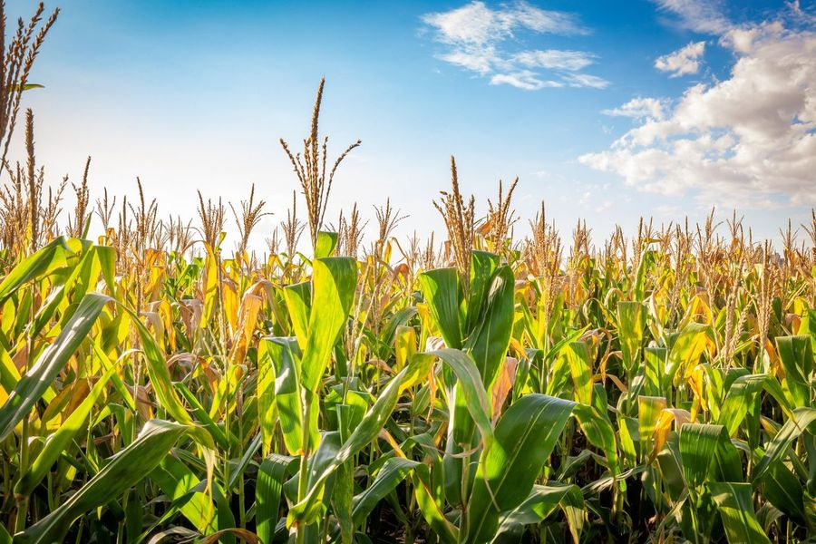
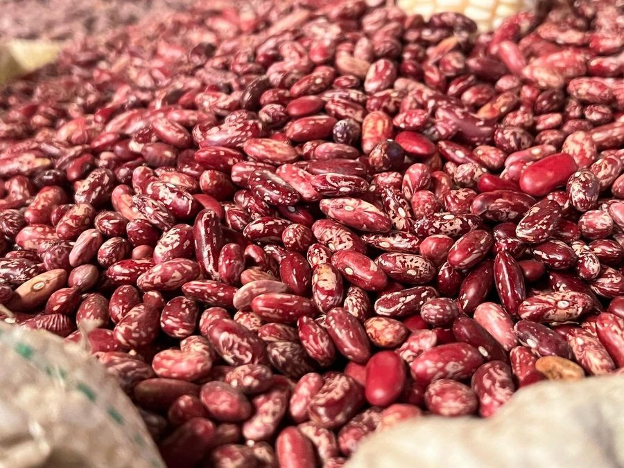
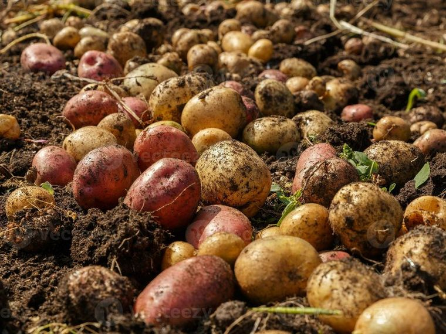

A free advisory service for Rwanda's farmers and extension officers. It follows the whole season, from deciding what to plant to selling at the right price, across all 30 districts and the country's staple crops.
Rates each district and season low, medium, or high by combining rainfall against its normal, food inflation, and fertilizer cost, so a farmer knows whether to plant cautiously.
Turns the farmer's land size into the exact fertilizer needed, the bags of NPK, urea, or DAP and their cost at subsidised prices, checked against the budget.
Reads the live weather forecast for the district and warns when conditions favour a crop disease, like potato late blight in cool, wet spells, with the action to take.
Projects the market price four weeks ahead per crop and district, so a farmer can decide whether to sell now or hold for a better price.
Every forecast, risk score, disease alert and input plan is tuned to maize, beans and Irish potatoes — the crops most Rwandan households grow and eat.

Price forecasts and gray leaf spot & leaf blight alerts across all 30 districts.

Seasonal risk and angular leaf spot warnings, with DAP input plans sized to your land.

Late-blight alerts in cool, wet spells plus NPK & urea plans at subsidised prices.
Every forecast, risk rating and alert is built from years of real Rwandan market, weather and price information, so the advice is grounded in what actually happens on the ground, not guesswork. Free to use, in Kinyarwanda and English.
Short Kinyarwanda alerts for price moves, risk, and disease, delivered to any phone with no internet or data cost.
A farmer asks a plain question and gets a short, useful answer, prices, risk, or what to do about a disease warning.
Extension officers and administrators see their district's forecasts, risk, and the farmers they support, all in one place.
No. The core advice goes out by SMS, which works on any basic phone with no internet. WhatsApp is there for farmers who use it, and the dashboard is for extension officers.
Maize, beans, and Irish potatoes across all 30 districts of Rwanda, the country's main food crops and the full national footprint.
Public sources: WFP for market prices, the World Bank for inflation and fertilizer costs, CHIRPS for rainfall, Open-Meteo for live weather, and MINAGRI for subsidised input prices.
Weather and disease alerts are live. Prices, inflation, fertilizer, and rainfall are published monthly, so the platform refreshes on that cycle and shows how recent its data is.
See forecasts, risk ratings, disease alerts, and input plans across all 30 districts.
See the dashboardWe're a student team building AgriRisk for Rwanda's farmers and extension officers. Send a message and we'll get back to you.